Classic local RAG and index-based RAG with Claude
Two RAG systems over the same internal archive of reports and studies. The classic RAG runs entirely on in-house infrastructure and answers questions citing document, sector and date for each passage, and the index-based RAG queries a catalogue of records from the file share to answer what exists on a subject, from which source and from when.
- 30questions in the RAG evaluation answer key
- 4knowledge bases each question is routed between
- 16steps at most in the index query loop
- 4curation levels assigned to each file
Classic local RAG
INGESTION
QUERY

EVALUATION

Designed for sensitive documents that cannot leave the company, the RAG runs with every model on in-house infrastructure. Parsing turns each PDF into Markdown with opendataloader, and a local vision model describes images and charts in text, inserting the description at the exact spot on the page it came from. Chunking cuts at headings, in passages of 40 to 220 words with a 40-word overlap between neighbours, never splits tables or described images and drops tables of contents. bge-m3 generates the embeddings and pgvector stores each passage with document, sector and date.
At query time questions enter a queue and are served one at a time, since the local models share the same GPU. A model routes each question to one of the four bases, hybrid retrieval joins vector search by cosine similarity with keyword search, a selection step discards what is not comparable and attaches a time warning, and Qwen3.6 35B writes the answer in streaming with numbered citations. Questions about the archive itself follow a deterministic path and are answered without search.
An evaluation framework runs an answer key of thirty questions, with the correct base known in advance, against each combination of model, chunking parameters and system prompts. Answers receive Ragas faithfulness, relevance and precision scores from a neutral judge, gemma3 27B, and routing accuracy is counted directly. Each run goes to MLflow with one span per stage, showing where each configuration loses quality and where it loses time, and evaluation runs in two phases so the evaluated model and the judge never occupy the GPU at the same time.
Index-based RAG
INGESTION

QUERY

The index answers which files exist on a subject, from which source and from when, by querying a catalogue of records instead of retrieving passages by vector similarity. The approach suits the archive, where most of the material is tabular and the meaning of a spreadsheet lies in the file name, the source and the header, exactly what the record keeps.
The inventory walks the network share with checkpoints and a list of ignored folders, and probing samples each file according to its type, reading the delimiter and first lines of a CSV, the sheets of a spreadsheet, the text of slides and of the first PDF pages and the code of notebooks. Curation sorts each file into four levels, with a verdict auditable in TSV, and extraction is incremental, so a file is only reprocessed when it changes or when the extractor version changes. A vision model describes images once, in batch, transcribing what is written instead of estimating.
Each file becomes a Markdown record with source, confidentiality, period, columns, sample and curation level, organised into collections and groups. Since the content does not need to stay inside the infrastructure, Claude navigates the catalogue with tools, deciding what to search, open and read in up to sixteen steps, and answers with the file path and the slide that supports each number. Search is BM25 with per-field weights that favour the title and then the path, the source and the columns, and every question and every step is logged in SQLite.
The index is served by an MCP server for agents and by a web page for people, which also documents the failure modes measured against an answer key of twenty questions checked file by file.
pgvector · bge-m3 · local VLM and LLM · Claude · PostgreSQL · opendataloader · Ragas · MLflow · MCP · FastAPI